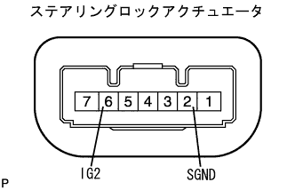

DTC B2788 Steering Lock ECU Power Source Malfunction |
| DTC No | DTC Detection Condition | Inspection Area |
|---|---|---|
| B2788 | Malfunction in IG2 input circuit of steering lock ECU |
|
| Step 1 | Inspect Steering Lock ECU |
 |
Turn IG ON.
Using SST (Toyota electrical tester), inspect the voltage between the terminals of the steering lock actuator.
| Tester Connection | Condition | Standard |
|---|---|---|
| 6(IG2) - 2(SGND) | IG ON | 11 to 14 V |
| 6(IG2) - 2(SGND) | IG OFF | 1V or less |
|
| ||||
| OK | ||
| ||